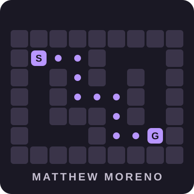
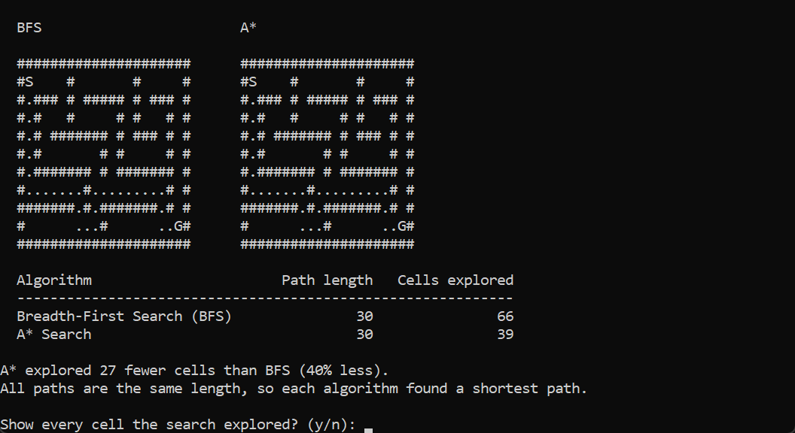

What I Build
Interactive C++ console applications, algorithm visualizations, and games with simple AI
Computer Science Student · C++ Developer
I’m a Computer Science student at Full Sail University focused on software engineering and artificial intelligence. I build object-oriented C++ programs, test them thoroughly, and track every change with Git and GitHub. My latest project, Maze Pathfinder, shows how search algorithms like BFS and A* think, then turns them into a game.

About Me
Before computer science, I spent years leading teams as a manager at T-Mobile and Verizon, served as a personal banker at Wells Fargo, and worked as an audio engineer and audio-visual director. That work taught me to troubleshoot under pressure, explain technical things clearly, and follow through. I’m now earning a Bachelor of Science in Computer Science at Full Sail University, with expected graduation in June 2027.
I’m most interested in software engineering and artificial intelligence, especially the search and decision-making algorithms behind them. I enjoy building programs that make an algorithm visible: you can watch it explore, compare it with another approach, and measure the difference. My goal is an internship and then an entry-level software engineering role where I can keep growing toward AI development.
Interactive C++ console applications, algorithm visualizations, and games with simple AI
Writing automated tests for my own code, memory and pointer management, and clean class design
Weighted search with Dijkstra’s algorithm, then Python and machine learning
Skills
Every skill below appears in Maze Pathfinder, and I can explain or show where.
Current Course Project
Built over four weeks in Project and Portfolio I: Computer Science at Full Sail University, planned with GitHub Issues and delivered in four milestones.

C++ Console Application
Maze Pathfinder is a C++ console application that shows how pathfinding algorithms search a maze, then turns that search into a game. You can watch Breadth-First Search or A* find the shortest path through a built-in, random, or saved maze, compare the two algorithms side by side, and play a chase mode where you race to the goal before an AI enemy that hunts you with A*. I built it to make abstract search algorithms visible and measurable, and to practice designing a multi-class program from the ground up.
The problem: when I first built Play mode, most games were impossible to win. Nothing crashed and every class worked on its own, which made it hard to spot: the bug was in the game’s balance, not its code. My mazes have exactly one route to the goal, so an enemy as fast as the player could usually cut them off.
What I tried: I first placed the enemy as far away as possible, then planned a faster enemy for Hard mode, but players still got trapped. To measure the problem, I wrote an automated test that simulated hundreds of games. It showed a fair start existed in only 16 to 56 percent of mazes.
How I solved it: the enemy now sleeps in its lair for a head start that the game calculates: the smallest one that still lets a perfect run escape, plus spare turns on easier difficulties. My self-test proves it on 300 random mazes: the shortest route always wins, and one turn less gets you caught.
This project changed how I debug. Instead of guessing, I write a test that shows the problem, then fix it. My self-test grew from 21 checks to 98 and caught bugs I would never have found by hand. I learned to organize a program into focused classes split across header and source files, to use a base class so new algorithms plug in without changing other code, and to handle pointers and references carefully. Planning every feature as a GitHub Issue, working on a dev branch, and merging through pull requests taught me to break a large project into small, finished steps, and refactoring against a saved baseline taught me to improve code without breaking it.
Contact
I’m Matthew Moreno, and I’m looking for internship and entry-level opportunities in software engineering, especially work involving algorithms or AI. If you’d like to talk about a role, a project, or my work, I’d be glad to connect.